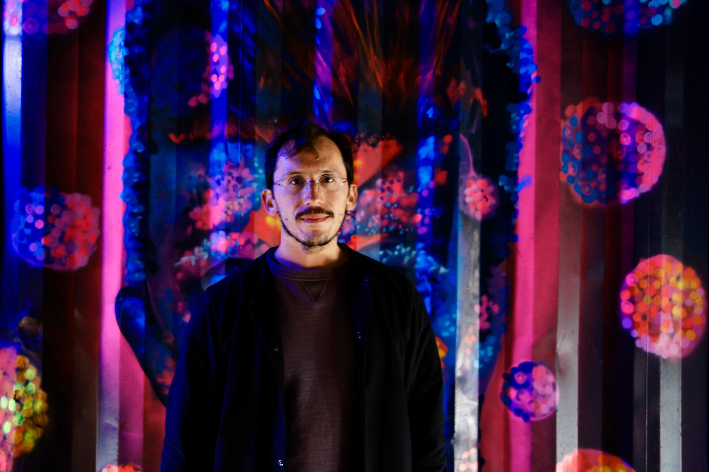

Phrase Flip
Read the web with sentences in the language you're learning. Hover to see the original.
Browser extension
Alex O'NeillApps, extensions, and other projects I've worked on.
Read the web with sentences in the language you're learning. Hover to see the original.
Browser extensionSwitch between function keys and media controls from your Mac's menu bar.
Live arrivals, service updates, and journey planning for AI assistants.
Fruit and vegetable calendars by country, for the web and TRMNL displays.
A virtual printer that captures print jobs for import into Apple Notes.
Watch YouTube videos from Reddit back-to-back, with a choice of subreddits.
Web app · ContributorThanks to zamhassam, who created RedditViewer. I contributed to the project.